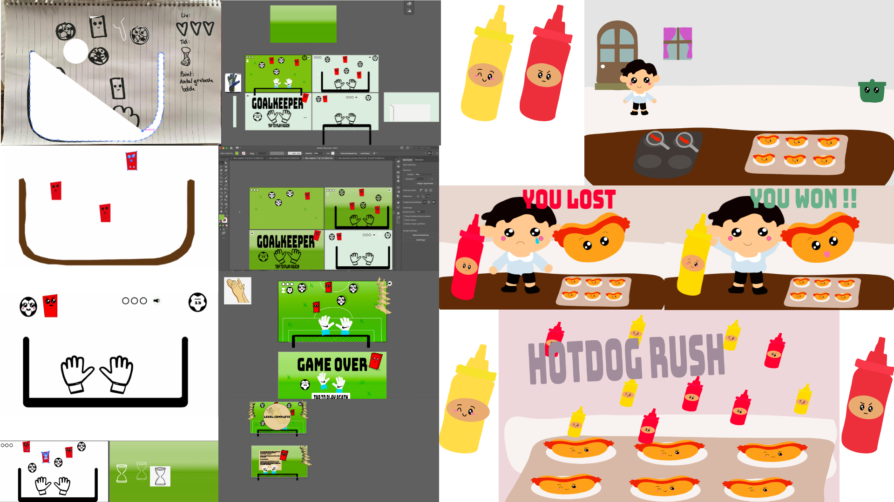

TEMA 4 - GRUNDLÆGGENDE ANIMATION

BESKRIVELSE AF TEMA
I temaet "Grundlæggende animation" blev vi introduceret til JavaScript, som bruges til at skabe interaktive elementer samt lave avancerede hjemmesider.
Vi fik til opgave at udarbejde vores eget individuelle spil med selvvalgt tema. Her skulle vi, sammen med css animationer, bruge den JavaScript-viden vi igennem temaet fik.
Vi lærte om brugen af Adobe Illustrater, hvor vi her selv skulle designe alle vores elementer til spillet. Derudover fik vi viden om baggrundsdesign, kompositionsteknikker og figurelementer, som vi skulle inddrage i designprocessen.
Til planlægning af spillet, brugte vi forskellige metoder som skitseringsteknikker, idégenereringsteknikker, moodboards, styletiles samt aktivitets- og statemachine-diagrammer. Vi lavede samtidig kvalitativ survey-undersøgelse og peer to peer, hvor vi i grupper skulle give hinanden feedback.

DOKUMENTATION FOR PROCES
Som det vises på første billede, startede jeg ud med at vælge at mit spil skulle omhandle fodbold. Jeg skitserede min idéer ned på papir, og gik hurtigt i gang med at designe i Adobe Illustrater med min nye viden herom. Stilarten lod sig inspirere af den japanske Kawaii stil, hvis kendetegn er, at tingene skal være "nuttede".
Billede 2 viser min designproces samt overgangen fra at have lavet et fodboldspil til at ville udfordre mig selv og mine evner i Adobe Illustrater, og til sidst ende op med at lave et spil der foregår på en restaurant og gælder om at fange dressing til hotdogs. Den læring vi fik i Adobe Illustrater i løbet af de 5 uger gav mig lysten til at dygtiggøre mig og lave flere små og detaljerede figurer, hvilket er begrundelsen for, at jeg til sidst kastede mig ud i et mere avanceret design.
Overordnet går mit spil ud på, at man skal forestille sig at man arbejder på en restaurant der bl.a. sælger hotdogs. En mand kommer ind og bestiller så mange hotdogs som muligt på den givne tid. Han er allergisk for ketchup, og man må derfor kun fange remouladerne som falder ned fra oven. Man dør, hvis man kommer til at fange 3 flasker med ketchup, eller hvis man ikke har nået at fange 10 remoulader inden tiden er gået.